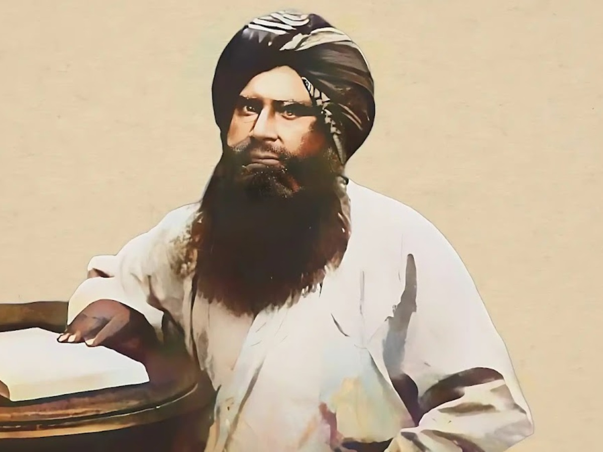

The Forgotten Artisans of Kutch
Exploring the intricate handicrafts and the stories of artisans preserving centuries-old traditions in the remote villages of Kutch, Gujarat.
Exploring the intricate handicrafts and the stories of artisans preserving centuries-old traditions in the remote villages of Kutch, Gujarat.
Discover the incredible living root bridges of Meghalaya, hand-shaped by the Khasi and Jaintia tribes over decades using the roots of rubber fig trees.
Meet the families in Varanasi who have been safeguarding ancient Sanskrit manuscripts for generations, preserving knowledge that dates back thousands of years.